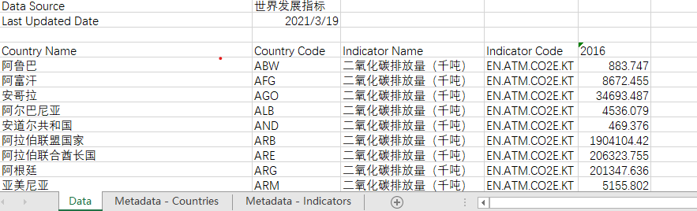
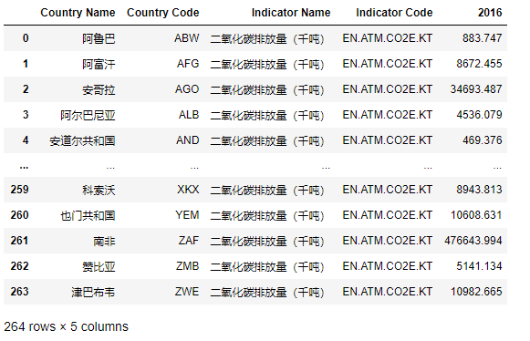

数据读取与保存¶
主要用到的是pandas库，可以通过pip install pandas进行安装；使用时通过import pandas as pd导入（以pd作为别名）；pandas能读取的文件类型很多，这里主要介绍对csv、excel文件的读取和保存；更多功能可查阅官方文档。
读取与保存-excel文件¶
需要通过pip命令安装openpyxl与xlrd：
pip install openpyxl pip install xlrd
读取excel文件 read_excel()¶
pandas.read_excel(io, sheet_name=0, header=0, names=None, index_col=None, usecols=None, squeeze=False, dtype=None, engine=None, converters=None, true_values=None, false_values=None, skiprows=None, nrows=None, na_values=None, keep_default_na=True, na_filter=True, verbose=False, parse_dates=False, date_parser=None, thousands=None, comment=None, skipfooter=0, convert_float=True, mangle_dupe_cols=True, storage_options=None)
| 参数 | 描述 |
|---|---|
| io | str, bytes, ExcelFile, xlrd.Book, path object, or file-like object 一般为文件路径或ExcelFile类 |
| sheet_name | str（表名）, int（从0开始第几个表）, list（多个工作表）, or None（所有工作表）, default 0 |
| header | int, list of int, default 0 是否将第一行当作列名 |
| index_col | int, list of int, default None 索引 |
| na_values | scalar, str, list-like, or dict, default None |
| parse_dates | bool, list-like, or dict, default False 解析为时间：parse_dates=['列名'] |
基础用法：
import pandas as pd
data = pd.read_excel('path_to_file.xls或.xlsx',sheet_name='Sheet1')
# 文件路径和sheet_name根据自己文件内容修改（下同）
读取一个excel文件的多张工作表时，利用该类能够一次读取到内存。
xlsx = pd.ExcelFile("path_to_file.xls或.xlsx")
df = pd.read_excel(xlsx, "Sheet1")
或者
with pd.ExcelFile("path_to_file.xls") as xls:
df1 = pd.read_excel(xls, "Sheet1")
df2 = pd.read_excel(xls, "Sheet2")
对不同工作表传不同参数
data = {}
# For when Sheet1's format differs from Sheet2
with pd.ExcelFile("path_to_file.xls") as xls:
data["Sheet1"] = pd.read_excel(xls, "Sheet1", index_col=None, na_values=["NA"])
data["Sheet2"] = pd.read_excel(xls, "Sheet2", index_col=1)
如果不同工作表传的参数相同，ExcelFile方式相当于read_excel函数
data = {}
with pd.ExcelFile("path_to_file.xls") as xls:
data["Sheet1"] = pd.read_excel(xls, "Sheet1", index_col=None, na_values=["NA"])
data["Sheet2"] = pd.read_excel(xls, "Sheet2", index_col=None, na_values=["NA"])
# equivalent using the read_excel function
data = pd.read_excel(
"path_to_file.xls", ["Sheet1", "Sheet2"], index_col=None, na_values=["NA"])
pd.read_excel("path_to_file.xls", "Sheet1", parse_dates=["date_strings"])
pd.read_excel("path_to_file.xls", "Sheet1", index_col='列名')# index_col默认值是None
保存到excel文件 to_excel()¶
要将DataFrame对象写入Excel文件的工作表，可以使用to_excel实例方法。第一个参数是excel文件的路径名称，第二个参数是要写入excel的工资表名称。例如：
df.to_excel('path_to_file.xlsx',sheet_name='Sheet1')
- 更多参数介绍，请查阅 pandas.read_excel。
读取与保存-csv文件¶
读取csv文件 read_csv()¶
pandas.read_csv(filepath_or_buffer, sep=<object object>, delimiter=None, header='infer', names=None, index_col=None, usecols=None, squeeze=False, prefix=None, mangle_dupe_cols=True, dtype=None, engine=None, converters=None, true_values=None, false_values=None, skipinitialspace=False, skiprows=None, skipfooter=0, nrows=None, na_values=None, keep_default_na=True, na_filter=True, verbose=False, skip_blank_lines=True, parse_dates=False, infer_datetime_format=False, keep_date_col=False, date_parser=None, dayfirst=False, cache_dates=True, iterator=False, chunksize=None, compression='infer', thousands=None, decimal='.', lineterminator=None, quotechar='"', quoting=0, doublequote=True, escapechar=None, comment=None, encoding=None, dialect=None, error_bad_lines=True, warn_bad_lines=True, delim_whitespace=False, low_memory=True, memory_map=False, float_precision=None, storage_options=None)
read_csv的参数较多，使用时根据文件内容进行选择；常用的有以下几个参数：
| 参数 | 描述 |
|---|---|
| filepath_or_buffer | str, path object or file-like object |
| sep | str, default ‘,’分隔符，默认是逗号 |
| header | int, list of int, default ‘infer’ 表头 |
| index_col | int, str, sequence of int / str, or False, default None 索引 |
| encoding | str, optional 解码 |
| parse_dates | bool or list of int or names or list of lists or dict, default False |
基础用法：
pd.read_csv('文件路径',sep='分隔符',encoding='解码方式')
保存到csv文件 to_csv()¶
to_csv()的可选参数也较多，常用的参数有：
| 参数 | 描述 |
|---|---|
| path_or_buf | 保存路径 |
| sep | 分隔符，默认是‘,’ |
| na_rep | 缺失值，默认是空格 |
| header | 是否带表头，默认是True |
| encoding | 解码方式 |
- 更多参数介绍，请查阅 pandas.read_csv
案例¶
读取excel数据¶
数据为2016年世界各国二氧化碳排放量（2016world-co2.xls），数据源于世界银行
文件存放在C:\Users\Administrator\Desktop\2016world-co2.xls,内容如下：

可以发现Excel文件有3个工作表，我们需要的数据在Data工作表中（当然也可以不传sheet_name参数，因为需要的数据就在第0个工作表中），另外表头为第三行（从0开始算）；为此可通过以下方式读取数据：
import pandas as pd
# 读取2016年的数据
data = pd.read_excel(r'C:\Users\Administrator\Desktop\2016world-co2.xls',sheet_name='Data',header=3)

保存数据¶
data.to_excel('data.xlsx',sheet_name='co2')# 保存到当前工作目录下，文件名为data.xlsx，工作表名为co2